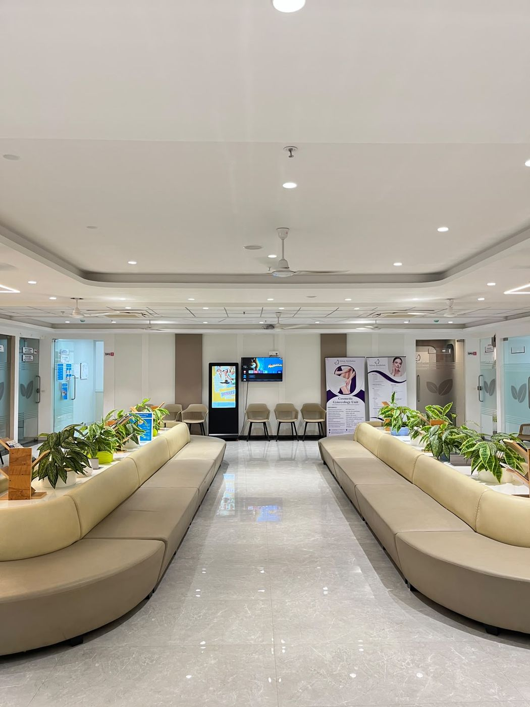

Inguinal hernia
In the groin; the most common type, especially in men.
In short: Mesh-based hernia repair using open or laparoscopic techniques, selected for your hernia type, age and lifestyle to reduce the chance of recurrence. After a private examination, we explain the right option for you.
Led by Dr. Abhijeet Suresh Shinde, General & Laparoscopic Surgeon and Consultant Proctologist.
A hernia occurs when part of the intestine or tissue pushes through a weak spot in the abdominal wall. It appears as a bulge in the groin, navel or abdomen and may cause discomfort when lifting, coughing or standing.
A hernia does not heal on its own. Planned repair with a strong mesh, done by laparoscopic or open technique, is the safest option and lowers the chance of the hernia returning.
The bulge goes back in when you lie down. Surgery is planned at a convenient time.
The bulge is stuck, painful and may cut off blood supply. This is an emergency.
Hernia is not the same for every patient. Knowing which approach suits you helps us plan treatment properly.
In the groin; the most common type, especially in men.
At the navel, common in children and adults.
At the site of a previous surgical scar.
In the abdominal wall or upper thigh, needing careful planning.
A hernia that becomes hard, very painful or cannot be pushed back, especially with vomiting, needs emergency care.
Several conditions can feel alike. This comparison is a rough guide; only an examination can confirm the cause.
Still not sure which one it is? Symptoms overlap, and only an examination can confirm the cause.
Book a ConsultationA hernia occurs where the abdominal wall is weak or has been stretched. Repeated strain on that area pushes tissue through.
Some weakness is present from birth; other times it develops over the years or after surgery.
Diagnosis is simple, quick and done in privacy. You are told what is being done at each step.
Where the bulge is, when it appears and what makes it worse.
Standing and lying examination, with a cough to see the bulge.
Used when the diagnosis is unclear or the hernia is small.
The hernia type and best repair are explained to you.
A CT scan is rarely needed, for example in complex or incisional hernias.
The choice between non-surgical care and surgery depends on your findings, symptoms and health. This table is a guide, not a prescription.
| Stage | Usual first approach | When a procedure may be considered |
|---|---|---|
| Small, no symptoms | Watchful waiting in selected patients | Surgeon agrees it is safe to wait |
| Symptomatic hernia | Planned mesh repair | Pain, growth or limits daily life |
| Large or recurrent | Laparoscopic or open mesh repair | Chosen after examination and reports |
| Obstructed | Emergency surgery | Bulge is stuck or painful |
Many patients start with non-surgical care. It works best in the early stage, and Dr. Shinde starts here whenever it is safe and sensible.

Small daily changes make a big difference to treatment, and they also lower the chance of hernia returning.
Avoiding strain helps both before and after repair.

Because a hernia does not close by itself, repair is the permanent treatment. Most are done as day-care or one-night stay.
| Option | Suited to | Things to know |
|---|---|---|
| Laparoscopic mesh repair | Bilateral, recurrent or selected hernias | Small cuts; less pain; quicker return to routine |
| Open mesh repair | Selected primary hernias | Simple and reliable; may suit some patients better |
| Umbilical / ventral repair | Navel and abdominal wall hernias | Mesh or suture repair depending on size |
Laparoscopic repair places a strong mesh through small cuts, with a clear view of the whole area.
It often means less pain and a quicker return to routine, and Dr. Shinde chooses it only where it suits you.
Private discussion and examination.
Tests only where needed.
Non-surgical or surgical, explained.
Done as day-care where possible.
Recovery checks and guidance.
Most patients go home within a day. Walking starts early; heavy lifting is avoided for a few weeks, with clear advice on safe return to work and exercise.

Call us for fever, wound redness or discharge, severe pain, vomiting or a bulge that returns.
Call NowLess pressure on the abdominal wall.
Bend your knees; avoid heavy strain.
Do not let a cough linger.
Soft stools, no pushing.
Fix a hernia before it grows.
A hernia will not shrink by itself. Delay lets it grow and raises the chance of an emergency.
The defect widens and the hernia enlarges.
Daily work and exercise get harder.
Bowel can get stuck and cause vomiting.
A trapped hernia may need urgent surgery.
A belt may ease discomfort but does not close the defect.
Modern surgical mesh is widely used and lowers recurrence.
Most patients walk soon and go home within a day.
Women and children can get hernias too.
Click “Know more” on a card to see the fact.
There is no single price for hernia in Kharadi, Pune. Your surgeon explains the likely cost after examination, once the best treatment is clear. Cost is explained before you decide, not after.
Consult Dr. Abhijeet Suresh Shinde for hernia at DISHA Advanced Surgical & Laser Piles Clinic.
General & Laparoscopic Surgeon and Consultant Proctologist with specialised training.
A track record in clinical and surgical experience.
We say when surgery is not needed, and we explain every option.
A calm clinic near Manipal Hospital, Thite Nagar, Kharadi.
Explained after examination and before you decide.

What patients have written about their visit to our clinic in Kharadi, Pune, shown as posted on Google.

DISHA Advanced Surgical & Laser Piles Clinic
1st Floor, OPD No. 2, Survey No. 22/2, Ganga Altus, F Building, Cherry Life, Near Manipal Hospital, Thite Nagar, Kharadi, Pune 411014
Daily: 10:00 AM – 9:00 PM
No. A hernia does not close by itself. Surgery is the only permanent treatment, and early repair is simpler and safer.
Modern surgical mesh is widely used and safe. It strengthens the repair and significantly reduces the risk of recurrence.
The hernia may grow larger, become painful or get trapped, which can need emergency surgery.
It depends on the hernia, your age and health. Your surgeon recommends the safest option for you.
Yes. Every consultation and examination is private, respectful and judgement-free.
Call or WhatsApp +91 97668 15782, or use the online booking form. The clinic is open daily from 10 AM to 9 PM.
Cost depends on the treatment chosen. Your surgeon explains the likely cost after examination, before you decide.
Many procedures are done as day-care or a short stay, depending on your condition and fitness. Your surgeon will advise.
A short, private consultation with Dr. Abhijeet Suresh Shinde in Kharadi, Pune.
This page is general information and does not replace a personal medical opinion. Treatment decisions are made after examination.